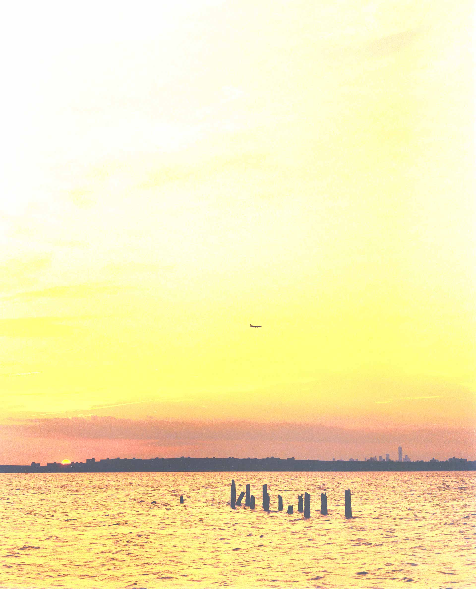
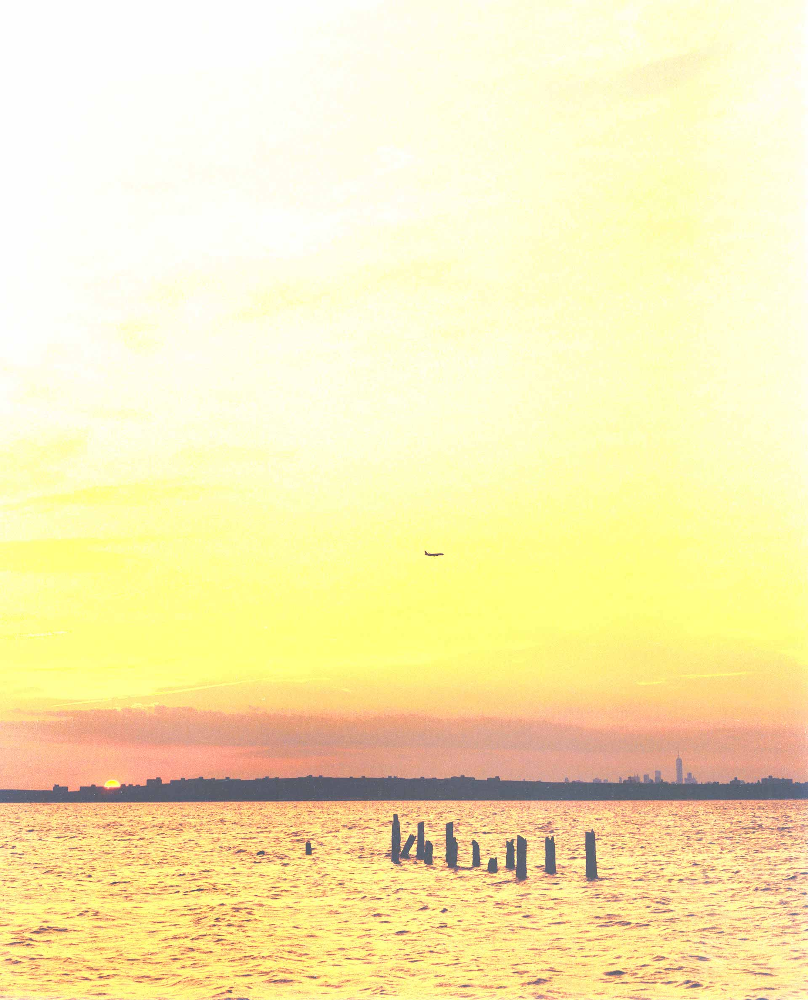

【KEMPINSKI杂志访谈】

【KEMPINSKI杂志访谈】
灏毅与高文安
灏毅设计工程有限公司与香港室内设计师之父高文安曾有多次的合作经历，和高文安先生
更是形成风格统一，设计思维敏锐的方向感，下面来更加详细的了解一下高文安
合作伙伴
灏毅
香港室内设计工程之翘楚
高文安
室内设计师之父
Hao Art Design Engineering Co. Ltd. and Hongkong interior designer father Gao Wenan
had several cooperation experience, and Mr. Gao Wenan
It is the formation of a unified style, design thinking of a keen sense of direction,
the following to a more detailed understanding of Gao Wenan
“香港设计师之父”高文安是香港由建筑师转为室内设计师的第一人。这个有着太多传奇的长者缔造的不仅是室内设计的神话，更是一位懂得生活的艺术家。50岁开始专业健身，年过花甲来内地创业。将深圳的旧厂房改造成办公室，曾把面馆和咖啡馆开进故宫，更是内地设计师的偶像。90年代中期，香港楼市低迷之时，高文安设计的一个1500套住宅却在开盘当天销售一空，如今古稀之年，一年之中乘飞机出差加旅行达150次。 对生活充满热忱的他不想做缺乏生活态度的设计，回头看其30年前的作品也不会觉得过时。从不追求潮流，也不标榜风格，因为他相信设计源于生活，人永远比风格重要。他不信风水，却相信相由心生，一幢房子的灵魂不是家居，而是人心，安家者，先安其心。一个心量大，有胸襟和气度的人，才有可能承载和容纳同等分量的福报。
高文安（Kennenth Ko），1943年生，留学生远赴海外，就读墨尔本大学建筑专业，之后又相继取得了香港、英国、澳洲3个建筑学院院士资格，成为香港资深高级室内设计师；在近40年的设计生涯内，设计超过5000个室内设计项目，被誉为香港室内设计之父，之后又接连获得香港室内设计协会终身成就奖，国际室内建筑师设计师联合会（IFI)“重大国际成就表彰”，成为名副其实的“中国室内设计第一人”。除了自己的设计本行外，高文安还创立了自有品牌“MY”系列，旗下拥有超过10个生活品牌。古稀之年的高文安常常挂在嘴边的是未来十年的规划和构想，他要把具有中国传统文化设计理念的酒店搬进陕西窑洞、开进宁夏沙漠，他要把英国古堡改造成中国文化展馆，他要为中华传统文化奔波到底。他说：“我的身体很好，我还能跑。”
高文安从来都说自已是一个商人。不是艺术家。但是他送给年轻人的成功秘笈却是先考虑别人，再考虑自己。他传达给年轻设计师的态度总是“先学会做人，再学设计”。“做人要一身正气，作品要大气”。他常说，做人做事。你多走一步，就有惊喜。但是，很多人纯粹为了做事。不会多替对方考虑一点，不会为别人制造惊喜。他成功的秘密也无非是比别人多做了一点点。 很多人都说，高文安设计的家，感觉很舒服。他自己也很难清楚解释。如他所言，“我希望我做的是一个能打动人的立体空间，是一个磁场，我要让住在房子里面的人感受到家是有吸引力的”。关于灵感，高文安也从未发过愁。因为灵感不是从他这里出去的，而是从外面进来的。比如，取之不尽的灵感之源其实是客户，不同的客户会有不同的成长故事
关于灏毅
高文安（Kennenth Ko），1943年生，留学生远赴海外，就读墨尔本大学建筑专业，之后又相继取得了香港、英国、澳洲3个建筑学院院士资格，成为香港资深高级室内设计师；在近40年的设计生涯内，设计超过5000个室内设计项目，被誉为香港室内设计之父，之后又接连获得香港室内设计协会终身成就奖，国际室内建筑师设计师联合会（IFI)“重大国际成就表彰”，成为名副其实的“中国室内设计第一人”。除了自己的设计本行外，高文安还创立了自有品牌“MY”系列，旗下拥有超过10个生活品牌。古稀之年的高文安常常挂在嘴边的是未来十年的规划和构想，他要把具有中国传统文化设计理念的酒店搬进陕西窑洞、开进宁夏沙漠，他要把英国古堡改造成中国文化展馆，他要为中华传统文化奔波到底。他说：“我的身体很好，我还能”
高文安（Kennenth Ko），1943年生，留学生远赴海外，就读墨尔本大学建筑专业，之后又相继取得了香港、英国、澳洲3个建筑学院院士资格，成为香港资深高级室内设计师；在近40年的设计生涯内，设计超过5000个室内设计项目，被誉为香港室内设计之父，之后又接连获得香港室内设计协会终身成就奖，国际室内建筑师设计师联合会（IFI)“重大国际成就表彰”，成为名副其实的“中国室内设计第一人”。除了自己的设计本行外，高文安还创立了自有品牌“MY”系列，旗下拥有超过10个生活品牌。古稀之年的高文安常常挂在嘴边的是未来十年的规划和构想，他要把具有中国传统文化设计理念的酒店搬进陕西窑洞、开进宁夏沙漠，他要把英国古堡改造成中国文化展馆，他要为中华传统文化奔波到底。他说：“我的身体很好，我还能”